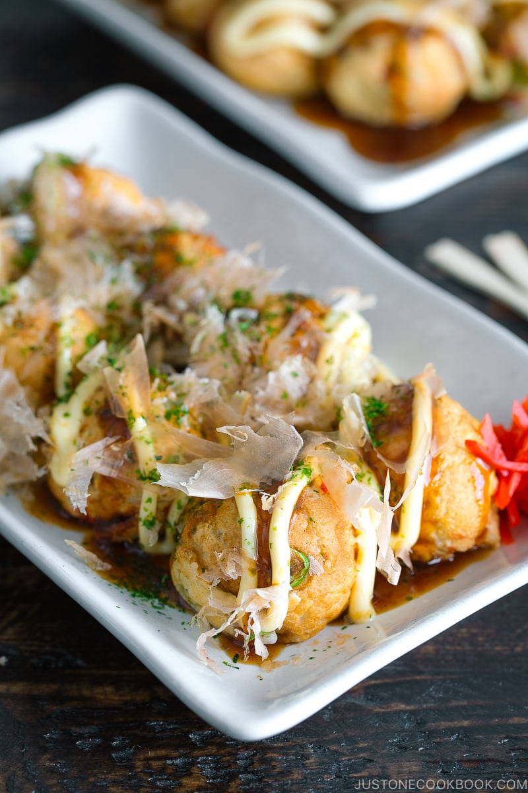

Takoyaki

Takoyaki Recipe たこ焼き
Takoyaki, or Grilled Octopus Balls, originated in Osaka and are one of Japan’s best-known street foods.
Whether you make a traditional style with bits of octopus or choose creative alternatives,
these ball-shaped dumplings are fun to make with your friends and family!
Takoyaki (たこ焼き) is a Japanese snack in the shape of little round balls containing pieces of octopus.
Tako-yaki literally translates to “octopus-grilled/fried”
and some people may call it “Grilled Octopus Balls” or “Octopus Dumplings”.
5 Ingredients for Authentic Takoyaki
There are so many variations of takoyaki throughout Japan.
For example, the original Osaka-style does not include any cabbage,
but many regional variations (Kyoto, Kobe, Nagoya, Tokyo areas) do.
Even though I lived in the Tokyo area, I actually didn’t know they sometimes contain cabbage till now.
Here are the ingredients for the classic takoyaki recipe.
- Dashi-flavored batter
- Octopus
- Beni shoga (pickled red ginger)
- Green onion
- Tenkasu or Agedama (Tempura scraps)
- Takoyaki Sauce & Garnish
Steps
- Gather all the ingredients.
- Prepare the filling
- Grind ¼ cup katsuobushi (dried bonito flakes) into a fine powder. Set aside; we‘ll use this powder when we‘re cooking the takoyaki.
- Cut 2 green onions/scallions into fine slices and mince 1 Tbsp pickled red ginger (beni shoga or kizami beni shoga).
- Cut 4.2 oz octopus sashimi (boiled octopus) into ½-inch (1.3-cm) bite-sized pieces; cut into smaller pieces for kids so they can chew it more easily. I use the rangiri cutting technique.
- Make the Batter
- In a large mixing bowl, combine 1 cup all-purpose flour (plain flour), 2 tsp baking powder, and ½ tsp Diamond Crystal kosher salt and whisk it all together.
- Add 2 large eggs (50 g each w/o shell), 1 tsp soy sauce, and 1½ cups dashi (Japanese soup stock).
- Whisk it all together until well blended and transfer the batter to a measuring cup with a handle (or any other pitcher with a spout for easy pouring.)
- Cook the Takoyaki
- Heat the takoyaki pan to 400ºF (200ºC) over medium heat. Use a brush to generously grease the pan‘s rounded chambers and flat top surface with 2 Tbsp neutral oil. When smoke starts to rise, pour the batter to fill the chambers. It’s okay to slightly overfill the cavities. In the next steps, the batter will likely overflow as you add more ingredients to it.
- Add 1–3 octopus pieces, depending on their size, to each chamber and sprinkle on top the katsuobushi powder that you ground earlier.
- Sprinkle ⅓ cup tenkasu/agedama (tempura scraps), the green onion slices, and the chopped pickled red ginger on top. After 3 minutes or so, when the batter on the bottom has set and is slightly crisp, use skewers to break the connected batter between each chamber. Then, rotate each piece 90 degrees (a quarter turn) toward the bottom of the pan, stuffing the connected dough back into the ball as you turn it. The uncooked batter will flow out from inside to create another side of the ball. After you finish turning them, set a timer for 4 minutes.
- After 4 minutes, rotate them again, starting with the first ball: Turn each takoyaki another 90 degrees toward the bottom of the pan so the remaining uncooked batter pours out into the chamber to complete the ball shape. Home takoyaki griddles don‘t distribute heat evenly, so it’s a good idea to swap the balls around to different chambers so they brown evenly. After turning and cooking for another 4 minutes, they are done.
- Transfer them onto a plate and drizzle ½ cup takoyaki sauce and Japanese Kewpie mayonnaise on top. Finish the dish with a sprinkling of katsuobushi (dried bonito flakes) and aonori (dried green laver seaweed) and a side of pickled red ginger (beni shoga or kizami beni shoga). Serve immediately. (But, be careful—they‘re VERY hot inside!)